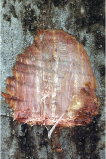
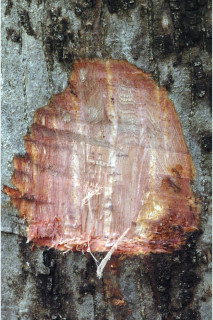
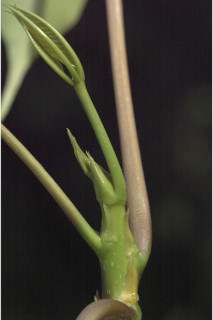
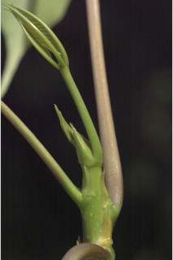
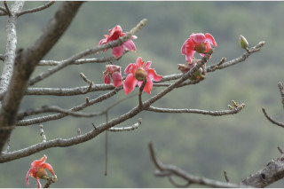
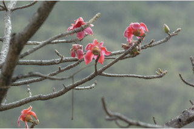

Tamil: Elava maram, Ilavu maram, Moul elavou, Mull ilavu, Pulai, Purani, Malai elavam. Malayalam: Ellavu, Illavu, Mullilavu, Poola. Kannada: Burga, Pula, Booragada mara, Kemphuburuga, Proparte. English: Malabar semul, Red cotton tree, Silk cotton.
Bombax malabaricum DC
Linnaeus, Sp. Pl. 511. 1753; Gamble, Fl. Madras 1: 99. 1997 (re. ed); Sasidharan, Biodiversity documentation for Kerala- Flowering Plants, part 6: 55. 2004; Saldanha, Fl. Karnataka 1: 239. 1996; Keshava Murthy and Yoganarasimhan, Fl. Coorg (Kodagu) 73. 1990; Cook, Fl. Bombay 2. 120. 1902.
 



 



 
